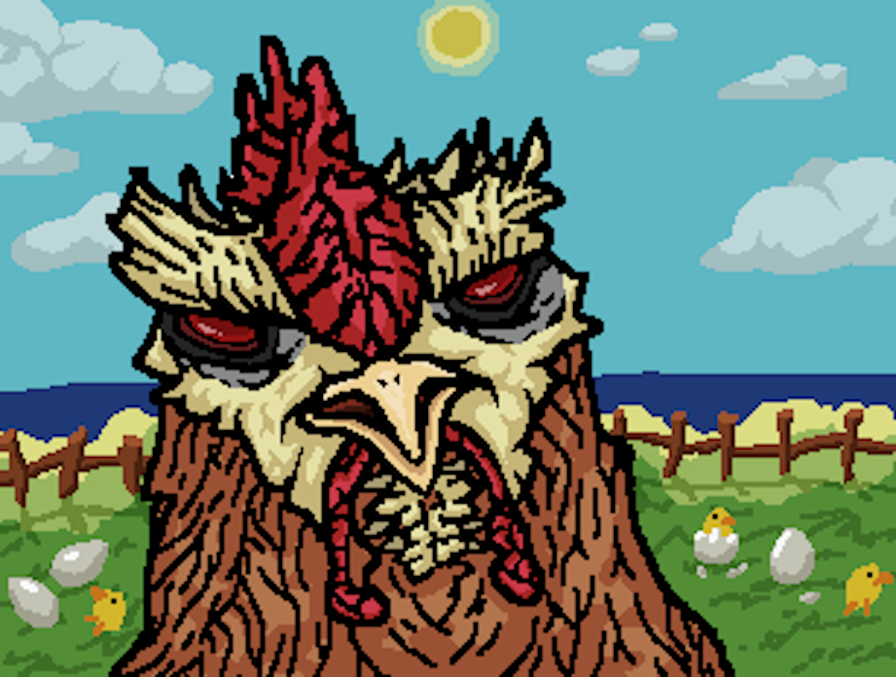

FLOCK FIGHTERS

ABOUT
A 4 player Pikmin-style battle royale, but with chickens, and trust issues, made for the 2018 WolverineSoft Turkey Game Jam.
Play as a sociopathic chicken that raises and sells their own chicks for money! Go head to head with other players by clucking
at them and making them lose their chicks. The bigger your chicks grow, the more you can sell them for.
DEVELOPMENT INFO
-
Developed by Seyhyun Yang, Jason Debel, Loren Heubert-Aubry, Daniel Thomas, and finalbossblues
-
48 hour development cycle (November 2018)
-
5 developers
-
Made using Unity Engine
CONTRIBUTIONS
CONTRIBUTIONS
My major contribution to this project was the implementation of the menu system and the egg spawner, and the design of the game mechanics. As stated earlier, the original
idea for the game was completely different, being a game a where you play as an egg, rolling down a hill and avoiding obstacles and trying not to crack yoursel open.
Around 18 hours were spent on this, and then we decide to pivot to the current idea. The mechanics for the eggs spawing went through multiple iterations throughout the
design process. Originally, they were supposed to simply spawn randomly, and then it was changed so that random nests would spawn with eggs in them, and then fixed nests
with randomly spawing eggs, and the final iteration was fixed nests with eggs spawning after a set time passes after the egg is hatched and the chick is taken. These
changes were mostly due to having not enough time to implement the mechanics, and the playing field of the game being decided to be small enough that random spawns were
ineffective in making the game more fun to play.